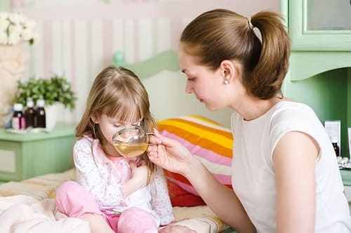
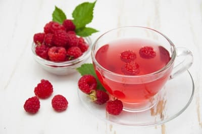
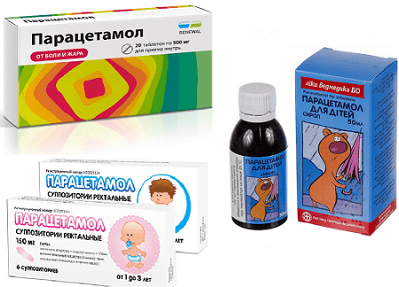

Повышение температуры тела – наиболее типичное проявление не только ОРВИ, но и любой инфекционной болезни. Организм таким образом сам себя стимулирует, вырабатывая при этом вещества, которые будут бороться с возбудителем.
Главное из этих веществ – интерферон. Про него многие слышали, хотя бы потому, что в виде капель в нос он довольно часто назначается врачами. Интерферон – это особый белок, обладающий способностью нейтрализовать вирусы, а его количество имеет прямую связь с температурой тела – т. е. чем выше температура, тем больше интерферона. Количество интерферона достигает своего максимума на второй-третий день после повышения температуры и именно поэтому большинство ОРВИ благополучно заканчиваются на третий день болезни. Ежели интерферона мало – ребенок слабенький (не может отреагировать на инфекцию высокой температурой), или родители «сильно умные»: быстренько температуру «сбили», – то шансов на окончание болезни за три дня почти не остается. В этом случае вся надежда на антитела, которые покончат с вирусами обязательно, но вот сроки болезни будут совсем другими – около семи дней. Кстати, приведенная информация во многом объясняет два факта: отвечает на вопрос, почему «нелюбимые» дети болеют три дня, а «любимые» – неделю, и на научном уровне объясняет народную мудрость касательно того, что леченый грипп проходит за 7 дней, а нелеченый – за неделю.
Каждый ребенок индивидуален и по-разному переносит повышение температуры. Встречаются малыши, спокойно продолжающие играть при 39 градусах, но бывает всего 37,5 ºС, а он чуть ли не теряет сознание. Поэтому не может быть универсальных рекомендаций в отношении того, до каких пор надобно ждать и после какой цифры на шкале градусника начинать спасать.
Главное для нас следующее.
При повышении температуры тела необходимо сделать все для того, чтобы организм имел возможность терять тепло. Тепло теряется двумя путями – при испарении пота и при согревании вдыхаемого воздуха.
Два обязательных действия:
1 Обильное питье – чтобы было чем потеть.
2 Прохладный воздух в комнате (оптимально 16–18 градусов).

Если эти условия выполнены, вероятность того, что организм сам не справится с температурой, очень невелика.
Внимание!
При контакте тела с холодом происходит спазм сосудов кожи. В ней замедляется кровоток, уменьшается образование пота и отдача тепла. Температура кожи уменьшается, но температура внутренних органов увеличивается. И это исключительно опасно!
Нельзя использовать в домашних условиях так называемые «физические методы охлаждения»: грелки со льдом, влажные холодные простыни, холодные клизмы и т. п. В больницах или после визита врача можно, потому что до того (до физических методов охлаждения) врачи назначают специальные лекарства, которые устраняют спазм сосудов кожи. Дома необходимо сделать все для того, чтобы спазма сосудов кожи не допустить. Поэтому
ПРОХЛАДНЫЙ ВОЗДУХ, НО ДОСТАТОЧНО ТЕПЛАЯ ОДЕЖДА.
Частички тепла уносятся из организма при испарении пота и таким образом понижается температура тела. Были придуманы несколько способов, позволяющих ускорить испарение. Например, поставить рядом с голеньким ребенком вентилятор; растереть его спиртом или уксусом (после растирания уменьшается поверхностное натяжение пота и он испаряется быстрее).
Люди! Вы даже представить себе не можете, какое количество детей поплатилось жизнью за эти растирания! Если уж ребенок пропотел, то температура тела снизится сама. А если вы растираете сухую кожу – это безумие, потому что через нежную детскую кожу то, чем вы растираете, всасывается в кровь. Растерли спиртом (водкой, самогоном) – добавили к болезни отравление алкоголем. Растерли уксусом – добавили отравление кислотой.
Вывод очевиден – никогда и ничем не растирайте. И вентиляторы тоже не нужны – поток прохладного воздуха опять-таки вызовет спазм сосудов кожи. Поэтому, если пропотел – переоденьте (перепеленайте) в сухое и теплое, после чего успокойтесь.
Чем выше температура тела, чем сильнее потеет, чем теплее в помещении – тем активнее необходимо поить. Оптимальный напиток для ребенка первого года жизни – отвар изюма. После года – компот из сухофруктов. Чай с малиной резко усиливает образование пота. Поэтому вы должны быть уверены в том, что есть чем потеть а значит, до малины надо бы выпить еще чего-нибудь (того же компота). Но в любом случае малину детям до года давать не следует.Если перебирает – это буду, а это не буду, – то пусть уж лучше пьет что угодно (минеральную воду, отвары трав, чай, калину, шиповник, смородину и т. д.), чем не пьет вообще.
Помните – жидкость нужна для того, чтобы не допустить сгущения крови. А любой напиток попадет из желудка в кровь только после того, как температура жидкости будет равна температуре желудка: дали холодное – не всосется, пока не нагреется, дали теплое – не всосется, пока не остынет.
Вывод: необходимо стремиться к тому, чтобы температура жидкости, используемой для питья, была равна температуре тела (плюс-минус 5 градусов не считается).
Бывают, и совсем нередко, ситуации, когда повышение температуры тела ребенком плохо переносится. Иногда повышение температуры тела для ребенка опасно потому, что у него есть какие-либо болезни нервной системы, и высокая температура тела может спровоцировать судороги. Да и, по большому счету, температура выше 39 градусов, которая держится больше часа, имеет отрицательных эффектов не меньше, чем положительных.

Таким образом, можно выделить три ситуации, когда имеет смысл применение лекарственных препаратов. Еще раз повторю:
1 Плохая переносимость температуры.
2 Сопутствующие болезни нервной системы.
3 Температура тела выше 39 градусов.
Сразу же отметим: эффективность любых лекарств снижается, а вероятность побочных реакций значительно увеличивается, если не решены указанные выше две главные задачи – не обеспечен должный режим питья и не снижена температура воздуха в помещении.
Для использования в домашних условиях оптимален парацетамол (синонимы – дофалган, панадол, калпол, мексален, доломол, эффералган, тайленол; хоть что-нибудь из перечисленного желательно иметь в свечах). Парацетамол – лекарство уникальное по своей безопасности, даже превышение дозы в 2–3 раза, как правило, не приводит к сколько-нибудь серьезным последствиям, хотя сознательно этого делать не надо. Мало найдется препаратов, сравнимых с ним и по удобству применения – таблетки, жевательные таблетки, капсулы, свечи, растворимые порошки, сиропы, капли – выбирай, что душе угодно.
Некоторая полезная информация по поводу парацетамола.
1 Самое главное: эффективность парацетамола очень высока именно при ОРВИ. При бактериальных инфекциях, при возникновении осложнений все тех же ОРВИ парацетамол помогает ненадолго или вообще не помогает. Короче говоря, ни при одной серьезной инфекции добиться с его помощью существенного снижения температуры тела не удается. Именно поэтому парацетамол всегда должен быть в доме, поскольку помогает родителям правильно оценить серьезность болезни: если после приема температура тела быстро снизилась, значит с высокой степенью вероятности можно заключить, что ничего страшного (более страшного, чем ОРВИ) у ребенка нет. А вот если эффект от приема парацетамола отсутствует – тут уже самое время подсуетиться и не откладывать в долгий ящик обращение к врачу.

2 Парацетамол выпускается сотнями фирм под сотнями самых различных наименований в десятках форм. Эффективность препарата определяется прежде всего дозой, а не формой выпуска, красотой упаковки и коммерческим наименованием. Разница в цене – нередко десятикратная.
3 Поскольку парацетамол относится к препаратам, которые наиболее часто используются без помощи врача, следует знать способы его (парацетамола) применения. Дозы, как правило, указаны на упаковке.
4 Парацетамолом не лечат. Парацетамолом уменьшают выраженность конкретного симптома – повышенной температуры тела.
5 Парацетамол не используют планово, т. е. строго по часам, например, «по 1 чайной ложке сиропа 3 раза в день». Парацетамол дают лишь тогда, когда есть повод дать. Высокая температура – дали, нормализовалась – не дали.
6 Нельзя давать парацетамол более 4-х раз в сутки и более 3-х суток подряд.
В любом случае, родители должны отдавать себе отчет в том, что самостоятельное использование парацетамола – лишь временная мера, позволяющая спокойно дождаться врача.
Е.О.Комаровский. "Здоровье ребенка"